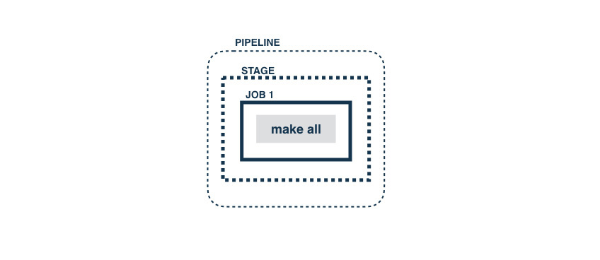
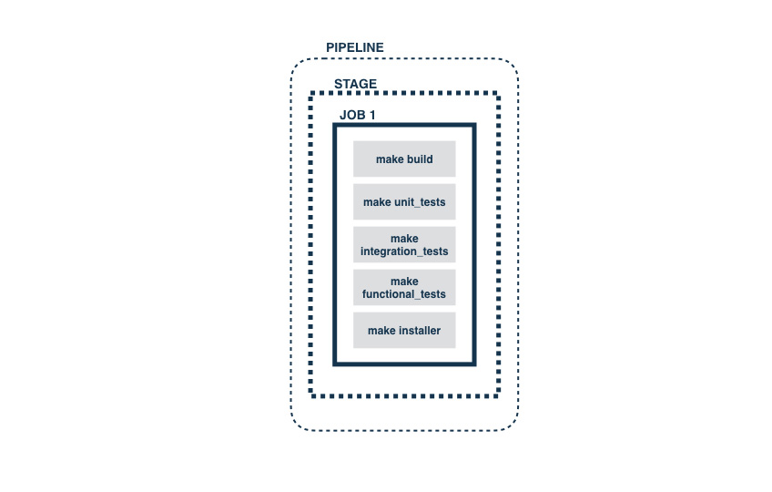
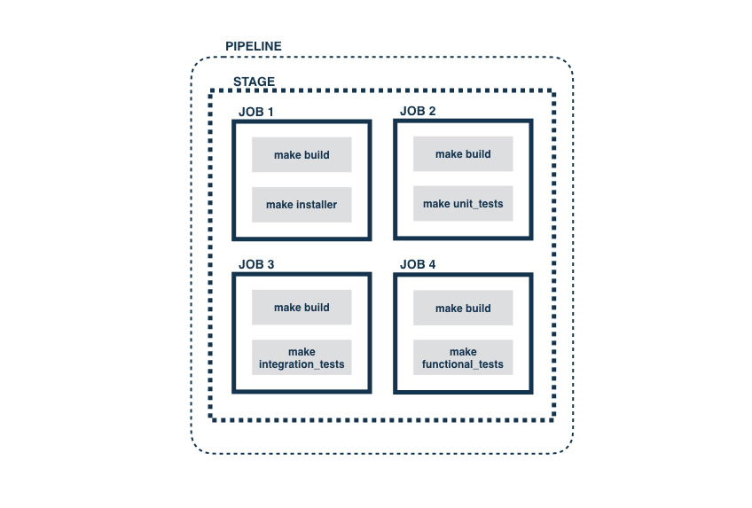

This is the second post in the series - Modeling Deployment Pipelines. In the first part of the series, we covered what continuous delivery pipelines were, why they were important and some of the fundamental principles behind them. In this post, we’ll look at some of the approaches to begin modeling a deployment pipeline for an application and a few ways they can be optimized.
Typical small app, with some tests
Consider a small, cross-platform desktop application, with unit, integration and functional tests. Let’s assume that the goal of the process is to create an installer which can be downloaded.
A typical approach to automate this process would be to have a build script (using Rake, Make, Ant, etc. or even a batch file or a shell script) which has all the individual steps of the process automated so that they can be run locally (Principle 5). Having this, you can now create a GoCD pipeline with a single stage which has a single job which has a single task which calls “make all” (for instance). It’ll look like this:

While this approach works, it’s not very flexible. It doesn’t make it easy to run different parts of the process on different agents, makes it hard to track progress and hard to parallelize. Even though it’s inside a pipeline, it doesn’t use any advantages of the pipeline concept and its modeling capabilities. This is no different from using a standard CI tool and making it run commands.
A slightly better approach is to break apart the individual pieces into separate GoCD tasks, like so:

This approach makes the individual tasks and the order in which they are run, more explicit. It can be argued that this comes at the expense of tying the order of the processes to the CD tool. However, we think that this orchestration is the job of the CD tool and entrusting it to the CD tool allows better flexibility in modeling the processes.
Let’s see how that can work.
Does breaking it up into parallelizable jobs help?
In the current setup, all the tasks still run one after the other and still run on the same agent. Assuming that the tests can be run separately, we can try and use GoCD’s jobs to parallelize these. The assumption, at this time, is that the “make build” task creates some artifact which is necessary for the tests to run.
So, we can try to split up the single job into multiple jobs like this:

However this approach has some disadvantages:
- Since jobs run in parallel and are independent of each other, the “make build” is run 4 times, on potentially different agents.
- The build (artifact) that the unit tests ran with cannot be guaranteed to be the same as the one that was run with the functional tests and cannot be guaranteed to be the one which the installer was built from.
- Apart from this, if the “make build” task fails, it’ll fail on all the jobs, complicating efforts to debug the failure.
What we really need is some ordering of the different stages of this build process.
The beginnings of a real pipeline
When we think about the different parts of this build process, we see that the first one is “make build”, which presumably compiles and builds necessary artifacts such as images or generated pages (Stage 1). If this fails, we want to get that feedback quickly (see Principle 1). Once this passes (and only when it passes) do we want to run the unit and integration tests, preferably parallely (see Principle 3) (Stage 2). Moreover, we want to use the same artifact built by the “make build” part of the process, while running these tests (see Principle 4). Once the tests are complete, we want to build the installer (Stage 3) and then run functional tests on the built installer (Stage 4). Very conveniently, GoCD’s stage concept allows this kind of a serial handoff and the artifact concept allows us to use the same artifact across the pipeline.
A setup such as the one described above might look like this:
Since stages run one after another, only if Stage 1 passes does it go to Stage 2 and so on. Also, since jobs run parallelly (assuming agents are available), the two jobs which run tests in Stage 2 can potentially run parallelly and provide quicker feedback than when run serially. Also, if both unit tests and integration tests fail for a changeset, then both parts of that feedback will be available simultaneously (in a single pipeline run). This is different from when they were all run serially as tasks in a single job.
More Jobs vs More Pipelines
We did mention earlier that our application was cross-platform. So, let’s assume that the functional tests need to be run on three different operating systems - Mac OS X, Windows and Linux. We could start to approach this by adding jobs in Stage 4 and use GoCD’s resource concept to make sure that the jobs are picked up by agents with the right operating system. This will involve running agents on the different operating systems and tagging them with resources “mac”, “windows” and “linux”. Once that’s done, we could setup our pipeline to look like this:
However, this approach isn’t the most optimal.
- An obvious disadvantage here is the duplication between the three jobs.
- Another problem is the lack of extensibility of this approach. It is usual practice to run a set of “smoke” tests before running the full set of functional tests - so that any obvious issues in core functionality are found earlier rather than later. It is also possible that functional tests might need to be run in parallel. So, having a job for each OS’s functional tests ends up being limiting. The only way to extend within the job would be to add more tasks which run one after the other.
To get around this, we can use GoCD’s powerful pipeline chaining mechanism, where a stage of a pipeline can be setup as a dependency for another pipeline. We can create one pipeline per operating system’s functional test. Let’s see how that looks:
This change brings in three new GoCD pipelines and also shows that moving the functional tests to their own pipeline enables better orchestration and control. In this case, there’s a “smoke” test stage at the beginning of each pipeline and the functional tests themselves are split into two parallel jobs, which can execute on different agents, potentially improving the end-to-end time. As soon as the installer stage of the “Build” pipeline finishes successfully, all three downstream pipelines are triggered. At this stage, it might occur as if we’ve replaced duplications that arise with many jobs with multiple pipelines. We’ll address how this can be optimized with Pipeline Templates in a later post.
GoCD provides the same strong guarantees related to artifacts across pipelines and not just within a pipeline. A stage in a downstream pipeline can confidently fetch an artifact published in any of its upstream pipelines and it will get the correct version of that artifact.
It is not atypical (though it is changing slowly) to deploy a build which has gone through all of these tests onto a set of deployment environments such as a UAT, pre-production and production environment. We’ll look at how you can model these in your deployment pipelines in our next post.